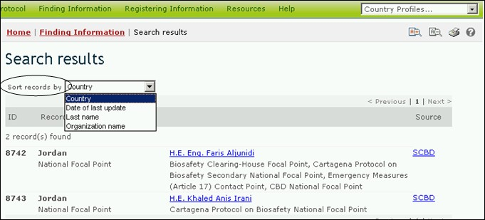

Для того чтобы изменить вид представления результатов поиска, пользователь может выбрать один из вариантов сортировки в выпадающем меню Sort results by (Сортировать по), которое содержится в верхней части любой страницы результатов поиска. Перечень вариантов сортировки будет содержать лишь варианты, имеющие отношение к поиску той информации, которую осуществляет пользователь.

Рисунок 65
Возможны следующие варианты сортировки результатов:
Страна: результаты поиска отображаются в алфавитном порядке по названию страны;
Дата последнего обновления: результаты поиска отображаются по дате последнего добавления или обновления, недавно измененные записи отображаются первыми;
Фамилия: результаты поиска отображаются в алфавитном порядке по фамилии субъектов;
Признак ЖИО: результаты поиска отображаются в алфавитном порядке по интродуцированному признаку или свойству. (Для получения полного перечня интродуцированных признаков, см. раздел ‘Свойства ЖИО’ в Тезаурусе МПБ);
Название гена: результаты поиска отображаются в алфавитном порядке по названию встроенного гена. (Для получения полного перечня и описания встроенных генов, см. Реестр генов);
Название организма: результаты поиска отображаются в алфавитном порядке по названию родительского, реципиентного организма или организма-донора (для получения полного перечня и описания организмов в МПБ, см. Реестр организмов);
Название организации: результаты поиска отображаются в алфавитном порядке по названию организации (организации могут включать Национальные компетентные органы или организации по биобезопасности);
Дата начала: результаты поиска отображаются по дате начала проекта или других мероприятий по созданию потенциала;
Предметная область: отображаются результаты поиска, сгруппированные согласно запрашиваемой предметной области (т.е., тип ЖИО, или предполагаемое использование);
Таксономический статус: результаты поиска отображаются в алфавитном порядке по научному (латинскому) названию организма;
Использованный метод: результаты поиска отображаются в алфавитном порядке по методу, использованному для осуществления модификации;
Заголовок: результаты поиска отображаются в алфавитном порядке по заголовку записи;
Тип записи: отображаются результаты поиска, сгруппированные в соответствии с типом записи;
Уникальная идентификация: результаты поиска отображаются в алфавитно-нумерационном порядке по уникальному идентификационному коду. (Для получения полного перечня и описания уникальных идентификационных кодов см. Реестр УИК ЖИО)